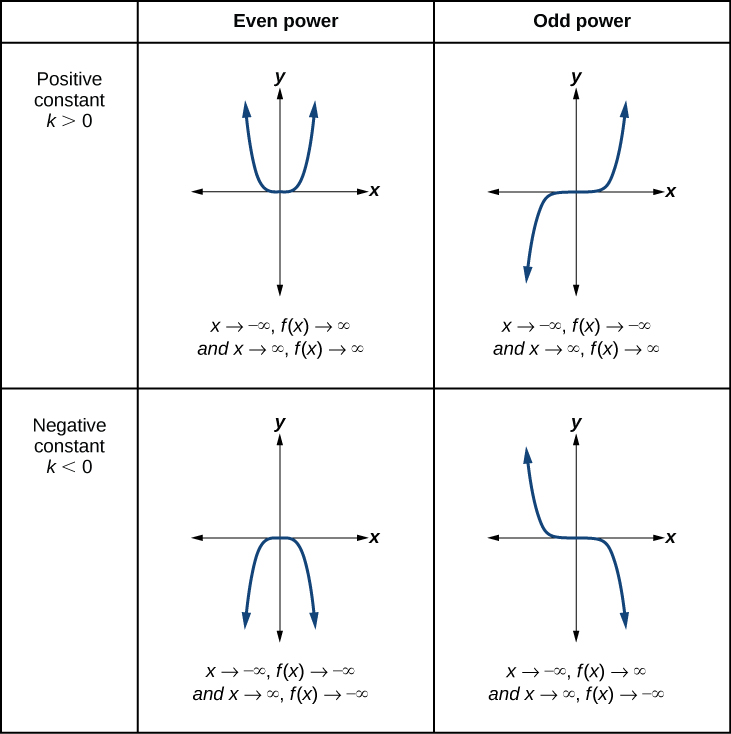
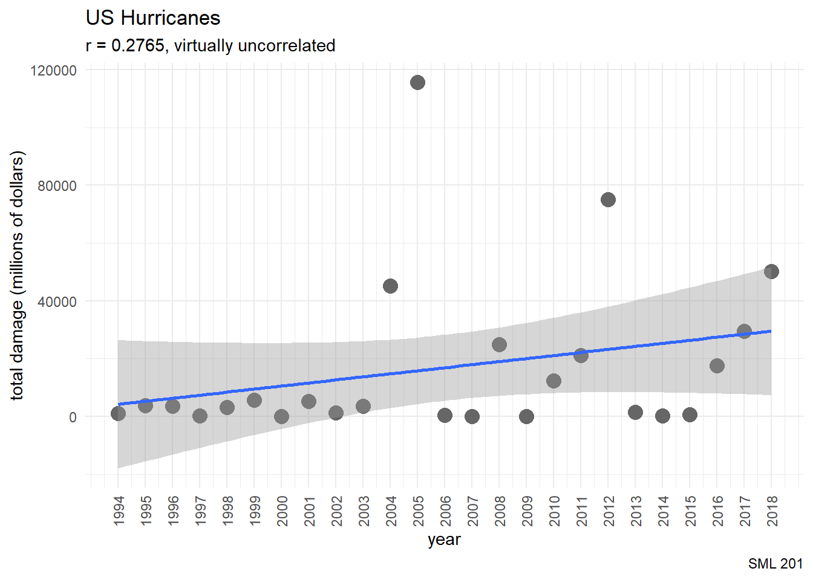
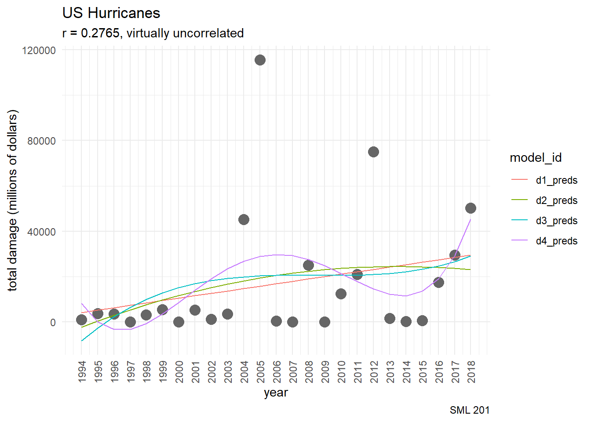
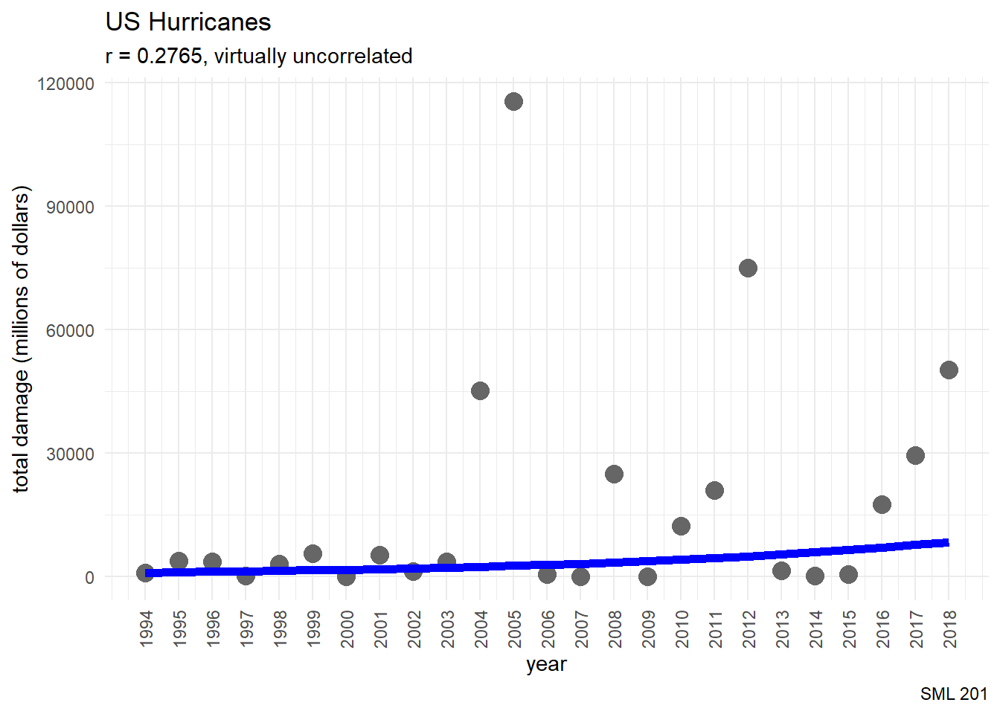
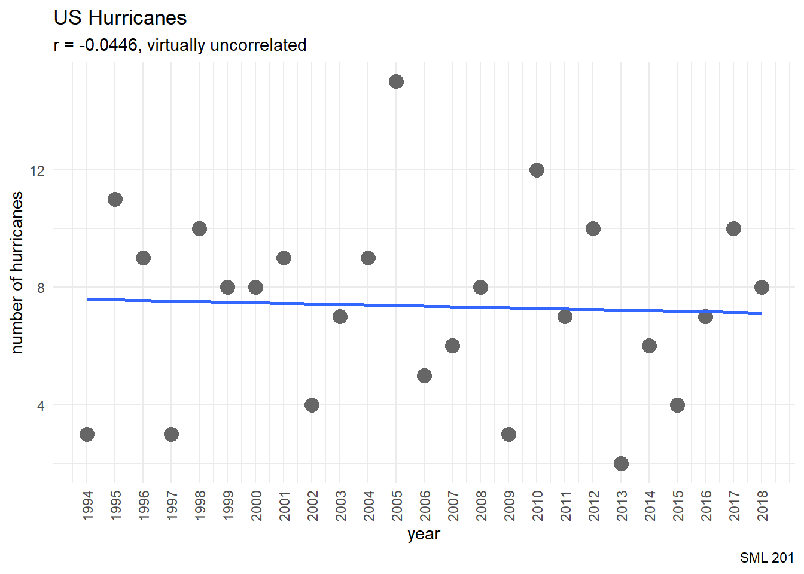

library("gt")
library("janitor") #tools for data cleaning
library("tidyverse") #tools for data wrangling and visualization
# user-defined function
cor2text <- function(x,y, num_digits = 4){
# This function will compute a correlation, round the result, and describe the results
# INPUTS:
## x: numerical vector
## y: numerical vector
## num_digits: number of digits for rounding (default: 4)
# OUTPUT: string
r = cor(x,y, use = "pairwise.complete.obs")
cor_des <- case_when(
r >= 0.7 ~ "strongly and positively correlated",
r >= 0.4 & r < 0.7 ~ "slightly and positively correlated",
r <= -0.4 & r > -0.7 ~ "slightly and negatively correlated",
r <= -0.7 ~ "strongly and negatively correlated",
.default = "virtually uncorrelated"
)
#return
paste0("r = ", round(r, num_digits),
", ", cor_des)
}hurricane_df <- readr::read_csv("hurricane.csv") |>
janitor::clean_names()SML 201
Start
Goal: Explore nonlinear variables and regression
Objective: Employ polynomial and exponential fits

- image source: Lumen Learning
Data
Hurricanes that affected the United States from 1994 to 2018
- Source: Weather Underground
We will try to predict the number of hurricanes that occur this year
damage(in millions of dollars)
yearstorms: number of tropical stormshurricanes: number of tropical storms that became hurricanesdeathsretired_names: hurricanes that were so noteworthy that meteorologists decided not to reuse the name
Task 1
- Task 1: Rank the years by how many retired hurricane names occurred in those years.
hurricane_df |>
mutate(num_notable = ifelse(str_detect(retired_names, ","),
str_count(retired_names, ",") + 1,
0)) |>
arrange(desc(num_notable), desc(damage)) |>
filter(num_notable >= 3) |>
select(year, num_notable, retired_names, deaths, damage)# A tibble: 9 × 5
year num_notable retired_names deaths damage
<dbl> <dbl> <chr> <dbl> <dbl>
1 2005 5 Dennis, Katrina, Rita, Stan, Wilma 3483 115520
2 2004 4 Charley, Frances, Ivan, Jeanne 3126 45235
3 2017 4 Harvey, Irma, Maria, Nate 3364 29467
4 1995 4 Luis, Marilyn, Opal, Roxanne 117 3729
5 2008 3 Gustav, Ike, Paloma 761 24945
6 2001 3 Allison, Iris, Michelle 92 5260
7 1996 3 Cesar, Fran, Hortense 126 3600
8 2003 3 Fabian, Isabel, Juan 50 3580
9 2007 3 Dean, Felix, Noel 341 50Task 2
- Task 2: Use statistics concepts to show that there might be a relationship between
yearanddamage.
hurricane_df |>
ggplot(aes(x = year, y = damage)) +
geom_point(color = "gray40", size = 4) +
geom_smooth(formula = "y ~ x", method = "lm", se = TRUE) +
labs(title = "US Hurricanes",
subtitle = cor2text(hurricane_df$year,
hurricane_df$damage),
caption = "SML 201",
x = "year", y = "total damage (millions of dollars)") +
scale_x_continuous(breaks = 1994:2018,
labels = as.character(1994:2018)) +
theme_minimal() +
theme(axis.text.x = element_text(angle = 90, vjust = 0.5, hjust=1))
Linear Regression
\[y = a + bx\]
mod1 <- lm(damage ~ year, data = hurricane_df)We continue to use a coefficient of determination to judge the quality of a regression model.
summary(mod1)$adj.r.squared[1] 0.03631863This coefficient of determination says that we can explain about 4 percent of the variance in hurricane damage (i.e. monetary damage) with this model.
Quadratic Regression
\[y = a + bx + cx^{2}\]
mod2 <- lm(damage ~ year + I(year^{2}), data = hurricane_df)
mod2
Call:
lm(formula = damage ~ year + I(year^{
2
}), data = hurricane_df)
Coefficients:
(Intercept) year I(year^{\n 2\n})
-2.857e+08 2.838e+05 -7.048e+01 predict(mod2, newdata = data.frame(year = 2024)) 1
16682.39 With this model, we predict that the 2024 hurricane season will incur about 17 billion dollars of damage.
Polynomial Regression
In math, we say that the basis of power functions is the set
\[\{ 1, x, x^{2}, x^{3}, x^{4}, ...\}\]
and we can expand regression models as
\[y = a + bx + cx^{2} + dx^{3} + ...\]
or
\[y = \beta_{0} + \beta_{1}x + \beta_{2}x^{2} + \beta_{3}x^{3} + ...\]
Degree 2
d2_fit <- lm(damage ~ poly(year, 2, raw = TRUE),
data = hurricane_df)
summary(d2_fit)
Call:
lm(formula = damage ~ poly(year, 2, raw = TRUE), data = hurricane_df)
Residuals:
Min 1Q Median 3Q Max
-24221 -13950 -5211 3268 96126
Coefficients:
Estimate Std. Error t value Pr(>|t|)
(Intercept) -2.857e+08 4.853e+08 -0.589 0.562
poly(year, 2, raw = TRUE)1 2.838e+05 4.839e+05 0.587 0.563
poly(year, 2, raw = TRUE)2 -7.048e+01 1.206e+02 -0.584 0.565
Residual standard error: 27980 on 22 degrees of freedom
Multiple R-squared: 0.09059, Adjusted R-squared: 0.007915
F-statistic: 1.096 on 2 and 22 DF, p-value: 0.3519d2_fit <- lm(damage ~ poly(year, 2, raw = FALSE),
data = hurricane_df)
summary(d2_fit)
Call:
lm(formula = damage ~ poly(year, 2, raw = FALSE), data = hurricane_df)
Residuals:
Min 1Q Median 3Q Max
-24221 -13950 -5211 3268 96126
Coefficients:
Estimate Std. Error t value Pr(>|t|)
(Intercept) 16855 5596 3.012 0.00641 **
poly(year, 2, raw = FALSE)1 38056 27979 1.360 0.18756
poly(year, 2, raw = FALSE)2 -16351 27979 -0.584 0.56490
---
Signif. codes: 0 '***' 0.001 '**' 0.01 '*' 0.05 '.' 0.1 ' ' 1
Residual standard error: 27980 on 22 degrees of freedom
Multiple R-squared: 0.09059, Adjusted R-squared: 0.007915
F-statistic: 1.096 on 2 and 22 DF, p-value: 0.3519
(optional) Orthogonal Bases
The use of poly in regression tasks has a choice
raw = TRUEemploys the power function basis
\[y = \beta_{0} + \beta_{1}x + \beta_{2}x^{2} + \beta_{3}x^{3} + ...\] but internal calculations are highly redundant and prone to be unstable.
raw = FALSE(the default setting) employs orthogonal polynomials to avoid the redundancy and aim for numerical stability. The Chebyshev Polynomials
\[\{1, x, 2x^{2} - 1, 4x^{3} - 3x, ... \}\] are an example of a basis of orthogonal polynomials, but poly employs an algorithm whose weights are based on the explanatory variable.
Degree 3
d3_fit <- lm(damage ~ poly(year, 3, raw = FALSE),
data = hurricane_df)
summary(d3_fit)
Call:
lm(formula = damage ~ poly(year, 3, raw = FALSE), data = hurricane_df)
Residuals:
Min 1Q Median 3Q Max
-22618 -17007 -7188 4362 95214
Coefficients:
Estimate Std. Error t value Pr(>|t|)
(Intercept) 16855 5693 2.961 0.00746 **
poly(year, 3, raw = FALSE)1 38056 28465 1.337 0.19554
poly(year, 3, raw = FALSE)2 -16351 28465 -0.574 0.57178
poly(year, 3, raw = FALSE)3 14414 28465 0.506 0.61788
---
Signif. codes: 0 '***' 0.001 '**' 0.01 '*' 0.05 '.' 0.1 ' ' 1
Residual standard error: 28460 on 21 degrees of freedom
Multiple R-squared: 0.1016, Adjusted R-squared: -0.02679
F-statistic: 0.7913 on 3 and 21 DF, p-value: 0.5123Degree 4
d4_fit <- lm(damage ~ poly(year, 4, raw = FALSE),
data = hurricane_df)
summary(d4_fit)
Call:
lm(formula = damage ~ poly(year, 4, raw = FALSE), data = hurricane_df)
Residuals:
Min 1Q Median 3Q Max
-29270 -11311 -2570 3618 86557
Coefficients:
Estimate Std. Error t value Pr(>|t|)
(Intercept) 16855 5541 3.042 0.00644 **
poly(year, 4, raw = FALSE)1 38056 27706 1.374 0.18477
poly(year, 4, raw = FALSE)2 -16351 27706 -0.590 0.56169
poly(year, 4, raw = FALSE)3 14414 27706 0.520 0.60861
poly(year, 4, raw = FALSE)4 40779 27706 1.472 0.15662
---
Signif. codes: 0 '***' 0.001 '**' 0.01 '*' 0.05 '.' 0.1 ' ' 1
Residual standard error: 27710 on 20 degrees of freedom
Multiple R-squared: 0.1894, Adjusted R-squared: 0.02724
F-statistic: 1.168 on 4 and 20 DF, p-value: 0.3546Linear Revisited
d1_fit <- lm(damage ~ poly(year, 1, raw = FALSE),
data = hurricane_df)
summary(d1_fit)
Call:
lm(formula = damage ~ poly(year, 1, raw = FALSE), data = hurricane_df)
Residuals:
Min 1Q Median 3Q Max
-25764 -11413 -6317 -1132 99721
Coefficients:
Estimate Std. Error t value Pr(>|t|)
(Intercept) 16855 5515 3.056 0.0056 **
poly(year, 1, raw = FALSE) 38056 27576 1.380 0.1808
---
Signif. codes: 0 '***' 0.001 '**' 0.01 '*' 0.05 '.' 0.1 ' ' 1
Residual standard error: 27580 on 23 degrees of freedom
Multiple R-squared: 0.07647, Adjusted R-squared: 0.03632
F-statistic: 1.904 on 1 and 23 DF, p-value: 0.1808Graphing Polynomial Fits
new_data = data.frame(year = hurricane_df$year)
hurricane_wide <- hurricane_df |>
mutate(d1_preds = predict(d1_fit, new_data),
d2_preds = predict(d2_fit, new_data),
d3_preds = predict(d3_fit, new_data),
d4_preds = predict(d4_fit, new_data))hurricane_long <- hurricane_wide |>
pivot_longer(cols = matches("preds"),
names_to = "model_id",
values_to = "preds")hurricane_long |>
ggplot(aes(x = year, y = damage)) +
geom_point(color = "gray40", size = 4) +
geom_line(aes(x = year, y = preds,
color = model_id)) +
labs(title = "US Hurricanes",
subtitle = cor2text(hurricane_df$year,
hurricane_df$damage),
caption = "SML 201",
x = "year", y = "total damage (millions of dollars)") +
scale_x_continuous(breaks = 1994:2018,
labels = as.character(1994:2018)) +
theme_minimal() +
theme(axis.text.x = element_text(angle = 90, vjust = 0.5, hjust=1))
Exponential Regression
\[\begin{array}{rcl} y & = & A(B^{x}) \\ \ln y & = & \ln A(B^{x}) \\ \ln y & = & \ln A + x\ln B \\ \end{array}\]
- response variable: log(
damage) - \(\beta_0 = \ln A\) and \(\beta_{1} = \ln B\)
exp_fit <- lm(log(damage) ~ year, data = hurricane_df)
exp_fit
Call:
lm(formula = log(damage) ~ year, data = hurricane_df)
Coefficients:
(Intercept) year
-170.06820 0.08875 exp(predict(exp_fit, data.frame(year = 2024))) 1
14318.88 hurricane_df <- hurricane_df |>
mutate(exp_preds = exp(predict(exp_fit, new_data)))hurricane_df |>
ggplot(aes(x = year, y = damage)) +
geom_point(color = "gray40", size = 4) +
geom_line(aes(x = year, y = exp_preds),
color = "blue", linewidth = 2) +
labs(title = "US Hurricanes",
subtitle = cor2text(hurricane_df$year,
hurricane_df$damage),
caption = "SML 201",
x = "year", y = "total damage (millions of dollars)") +
scale_x_continuous(breaks = 1994:2018,
labels = as.character(1994:2018)) +
theme_minimal() +
theme(axis.text.x = element_text(angle = 90, vjust = 0.5, hjust=1))
Various Predictions
new_point <- data.frame(year = 2024)
model_used <- c("d1_fit", "d2_fit", "d3_fit", "d4_fit", "exp_fit")
preds2024 <- c(
predict(d1_fit, new_point)/1000,
predict(d2_fit, new_point)/1000,
predict(d3_fit, new_point)/1000,
predict(d4_fit, new_point)/1000,
exp(predict(exp_fit, new_point))/1000
)
model_summary_df <- data.frame(model_used, preds2024)| Hurricane Damage for the Year 2024 | |
|---|---|
| Predictions (in billions of dollars) | |
| model_used | preds2024 |
| d1_fit | 3.59 × 101 |
| d2_fit | 1.67 × 101 |
| d3_fit | 5.77 × 101 |
| d4_fit | 3.45 × 102 |
| exp_fit | 1.43 × 101 |
| Disclaimer: none of the coefficients of determination were good | |
model_summary_df |>
gt() |>
cols_align(align = "center") |>
fmt_scientific() |>
tab_footnote(footnote = "Disclaimer: none of the coefficients of determination were good") |>
tab_header(
title = "Hurricane Damage for the Year 2024",
subtitle = "Predictions (in millions of dollars)"
) |>
tab_style(
style = cell_text(weight = "bold"),
locations = cells_column_labels()
)Quo Vadimus?
- Exam 1: Oct 10
- Refer to weekly announcement for more info
- last-minute exam advice from 5 Second Films
Footnotes
(optional) Additional Resources
hurricane_df |>
ggplot(aes(x = year, y = hurricanes)) +
geom_point() +
geom_point(color = "gray40", size = 4) +
geom_smooth(formula = "y ~ x", method = "lm", se = FALSE) +
labs(title = "US Hurricanes",
subtitle = cor2text(hurricane_df$year,
hurricane_df$hurricanes),
caption = "SML 201",
x = "year", y = "number of hurricanes") +
scale_x_continuous(breaks = 1994:2018,
labels = as.character(1994:2018)) +
theme_minimal() +
theme(axis.text.x = element_text(angle = 90, vjust = 0.5, hjust=1))
Session Info
sessionInfo()R version 4.4.1 (2024-06-14 ucrt)
Platform: x86_64-w64-mingw32/x64
Running under: Windows 10 x64 (build 19045)
Matrix products: default
locale:
[1] LC_COLLATE=English_United States.utf8
[2] LC_CTYPE=English_United States.utf8
[3] LC_MONETARY=English_United States.utf8
[4] LC_NUMERIC=C
[5] LC_TIME=English_United States.utf8
time zone: America/New_York
tzcode source: internal
attached base packages:
[1] stats graphics grDevices utils datasets methods base
other attached packages:
[1] lubridate_1.9.3 forcats_1.0.0 stringr_1.5.1 dplyr_1.1.4
[5] purrr_1.0.2 readr_2.1.5 tidyr_1.3.1 tibble_3.2.1
[9] ggplot2_3.5.1 tidyverse_2.0.0 janitor_2.2.0 gt_0.11.0
loaded via a namespace (and not attached):
[1] sass_0.4.9 utf8_1.2.4 generics_0.1.3 xml2_1.3.6
[5] lattice_0.22-6 stringi_1.8.4 hms_1.1.3 digest_0.6.35
[9] magrittr_2.0.3 evaluate_0.24.0 grid_4.4.1 timechange_0.3.0
[13] fastmap_1.2.0 Matrix_1.7-0 jsonlite_1.8.8 mgcv_1.9-1
[17] fansi_1.0.6 scales_1.3.0 cli_3.6.2 crayon_1.5.3
[21] rlang_1.1.4 splines_4.4.1 bit64_4.0.5 munsell_0.5.1
[25] withr_3.0.1 yaml_2.3.8 parallel_4.4.1 tools_4.4.1
[29] tzdb_0.4.0 colorspace_2.1-1 vctrs_0.6.5 R6_2.5.1
[33] lifecycle_1.0.4 snakecase_0.11.1 bit_4.0.5 htmlwidgets_1.6.4
[37] vroom_1.6.5 archive_1.1.8 pkgconfig_2.0.3 pillar_1.9.0
[41] gtable_0.3.5 glue_1.7.0 xfun_0.44 tidyselect_1.2.1
[45] rstudioapi_0.16.0 knitr_1.48 farver_2.1.2 nlme_3.1-164
[49] htmltools_0.5.8.1 labeling_0.4.3 rmarkdown_2.27 compiler_4.4.1
Example Callout Block
note, tip, warning, caution, or important